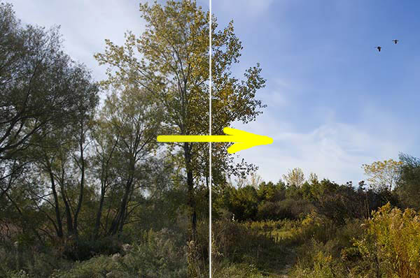
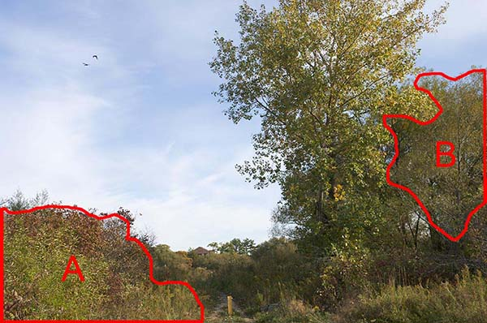
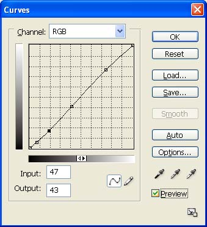
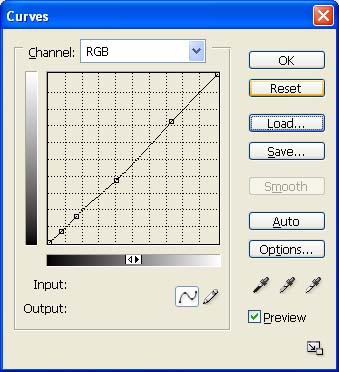
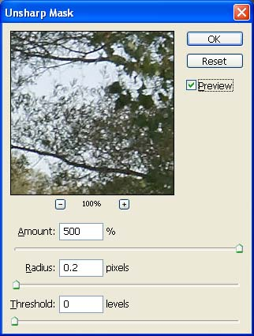

|
Digital Editing 102: Making it Singproject 1: easy does itVersion 1.3, page 1, © 2009 by Dale Cotton, all rights reserved IntroductionMaster photographer Charles Cramer writes 'When [the image] finally starts to "sing"...' on his site in reference to image editing: hence the title of this tutorial. Anyone who's worked seriously in darkroom or lightroom knows what Charles' felicitous phrase refers to. Of course, singing ranges from operatic warble to Crosby croon, so it's rather unlikely that my version of "sing" and Charles' version will bear any great resemblance. ;) For, of course, each of us must find his or her own voice. That cannot be taught, but techniques can: hence the intent of this tutorial.  Fig. 1: Making it sing Before digital many a photographer would shoot Kodachrome or Velvia, get back a box of mounted slides, then happily stick them in a projector in front of a silver screen. Zero post-processing. Between the magic of illuminated viewing and the candy-coating of saturation-enhanced film stocks most everything looked good. In stark contrast darkroom-based photographers shot black & white neg film, often with colour filters to change luminance balance, then spent hours working with an ever-morphing mix of alchemist's chemicals, dodging and burning each print just so, all in order to produce a subtly refined image in shades of grey on glossy paper. From these roots two very different schools of photographic thought – Mordor and Gondor – blossomed. The Kodachrome school militantly maintains the quaint doctrine that a photograph should be an unmodified representation of the real world. Unmodified, of course, except for long exposures to turn running water into clouds, warming, polarizing, and neutral density filters to change various properties of the scene, and colour-saturating film stocks. The darkroom school remains suspicious of colour but often embraces digital post-processing in all its geeky glory and holds this sacred: that the print, not the LCD panel, is the true sacriment of the photographic process. If your sympathies lie with the Kodachrome camp, you can stop reading right here – everything that follows (indeed, most everything on this site) will just serve to upset you. ;) If your sympathies lie with the darkroom camp, I hope we can come to terms, but fair warning: what follows is all about colour. A. Raw conversion and global changes
Fig. 2. Duffins Creek Marsh 5034, unedited raw I chose this image file to work with because it has a usable composition and subject matter that reminds me of a "typical" John Constable English landscape, right down to the dominant gracefully curved tree with curlicue leave and the pair of birds floating in the sky. The yellow pipe roadblock and contemporary shingled roof in the distance add a bit of wry commentary on all that's changed since Constable's time, but not enough so to turn the image into mere parody, at least in my mind. There is an entire school of photographic thought that utterly condemns any tampering with an image as shot by the camera. It's problematic what this approach means in practice when shooting black & white negs. It made superficial sense when shooting slide film ... but even then to take this approach means ignoring the vast differences in pallets between Velvia, Provia, Kodachrome, etc., not to mention the use of lens filters ranging from polarizing to neutral density, to warming. Now with digital capture the concept of a "straight" capture from a camera is purely and totally meaningless. Each camera either imposes a contrast curve, level of colour saturation, degree of highlight and shadow clipping, colour pallet, and white balance interpretation on the scene – or it offers menu choices by which the user can customize those responses. Fig. 2 is a "straight" capture, since it was shot in raw then post-processed with a linear tone curve and colour-corrected by a very accurate camera profile. So of course that means Fig. 2 looks exactly like the scene looked to my eye at the time, correct? Well, no: even ignoring the lack of dimensions 3 and 4, the human visual cortex automatically performs a vast array of image processing tweaks behind the scenes: the influence or colour cast of the light source (blue sky) is neutralized, shadows are opened, highlights compressed, and edges sharpened. Strangely, just the sort of thing a good darkroom or digital post-processing expert would do as a matter of course. Here's what the scene actually looked like to my eye:
Fig. 3. Duffins Creek Marsh 5034: human visual response simulation I used Lightroom version 3 beta to develop this tutorial but will pretty much stick to features that are common to other raw converters. The version 3 beta is a free download, so if you don't already have a favourite converter installed, you can install it, then follow along by clicking on Fig. 2, then saving the larger JPEG. Warning: LR3 is an extremely seductive tool. Continued use may be harmful to your bank balance.
1. Open in your raw converter, examine for unrecoverable issues like mis-focus and blown exposure. 2. Change Temperature from 4900K to 5333K. Not only is warmer light more attractive, your visual cortex automatically neutralizes colour casts such as the bluish tint introduced by the blue sky in this shot, so this change brings the image more in line with what I saw when I took the picture. 3. Change exposure by 0.19 stop (to remove slight blue channel clipping) 4. Set black point to 5. Again: this matches what your visual cortext would have done when viewing the scene. 5. Increase Brightness from 50 to 64. This corrects for the darkening caused by black point. 6. If contrast were too flat I would have fiddled with Tone Curve sliders. 7. Examine image at 100% or 200% magnification: noise level looks fine. We will sharpen in PS, so we'll leave Sharpening at zero. 8. Correct for very slight CA using the provided slider. 9. No other global changes, so export to Photoshop.
Fig. 4: final output from Lightroom B. Local changes 1: palletThis image is extremely unusual in that I have no urge to further fiddle with the colours. The slight warming in Lightroom is all I need. Specifically, the sky is a pure sky blue, the various hues in the vegetation all work together, and there is already enough variety of hue that I don't feel the need to extend the pallet. We'll make up for that in the second half of this tutorial, so don't feel cheated... ;) C. Local changes 2: contrastAnother rare thing: the sky is already perfect right down to the contrast between clouds and clear blue areas and there is even a pair of usably sized, perfectly positioned birds just in case anyone finds the large area of sky on the left to be too plain. However, the foreground still shows the relatively flat contrast of Lightroom's linear contrast "curve". How much we change that will strongly set the mood of the image. To some degree simply by printing the picture we will lower the contrast yet further, since paper has so little dynamic range compared to a monitor. If we apply an S-curve to the entire scene we have to be careful not to add too much contrast to those areas that already have enough. Lets see how much global contrast we can get away with:
Fig. 5: Sky contrast curve If your Curves dialogue in Photoshop only shows a 4 x 4 grid, Alt-click or Option-click on the graph area to toggle to a 10 x 10 grid. 1. Open Curves; put a stop point near bottom without moving the diagonal to prevent over-darkening the deepest shadows; play with S-curves to increase contrast; I settled on a very slight curve (PS1); but even that fraction-stop change radically increases the drama of the scene:
Fig. 6: Initial contrast change result The only weakness of the image now is the relative flatness or uninteresting-ness of the bottom left bushes (A) and the sunlit portions of the far-right clump of trees (B) shown in Fig. 7:  Fig. 7: Local contrast issues 2. Using the Lasso tool, make a quick, rough selection of the bottom left bushes (region A). 3. Feather about 40 or 50 pixels. 4. Using Lasso tool, reselect a swath adjoining both the left and bottom edges of the selection to remove the feathering there.
Fig. 8: Left corner contrast curve 5. Open the Curves dialogue then fiddle with the contrast. Notice that this region is actually too bright, so the curve should serve to darken it slightly as well (Fig. 8). 6. Save then cancel the selection, then make a new selection for region B in Fig. 7, again feathering except along the right edge.  Fig. 9: 7. Use Curves again to change contrast; this time I decide to slightly brighten this region as well as add contrast (Fig. 9).  Fig. 10: Left corner contrast curve for step 8 8. Save then cancel the right trees selection. Looking at the result so far, the left bush area still looks a little bleak and bright, so I restore the save selection for region A then use Curves to further tweak the contrast (Fig. 10).
Fig. 11: Step 8 result Stepping back to look at Fig. 11, the thing that catches my eye is that the overall composition weakens at the left and right edges. My tendency is to want to crop a bit, as indicated by the black dotted lines in FIg. 12 below. If we can save the full frame, however, that gives us more flexibility for future presentaton. For example: if I want to frame this in a 2:3 aspect ratio frame, it's good to go; if I have a 3:4 frame all I need do is crop and print a copy. Looking back at Fig. 11, what chiefly strikes me is the right-most trees still constitutes a flat, blob-like region. More contrast is not going to change that – what's needed is to re-sculpt this region to visually separate it from the large Constable tree just to its left. The yellow lines show the obvious flow of the image from right to left. What I want to do is emphasize that flow a bit more in the rightmost tree clump.
Fig. 12: Composition (yellow), problem region (red), and possible cropping (black dotted)
Fig. 13: Curve for step 9. 9. Make a rough Lasso tool selection of the red outlined region in Fig. 12; feather then use Curves to darken slightly (Fig. 13). 10. Set a history brush point just before that curve, then use the history brush at about 30% to undo as needed to make the change blend in.
Fig. 14: Duffins Creek Marsh 5034, final colour and contrast That seems to be it: the starting image was already strong; I don't see anything more that needs fixing here. D. Local changes 3: global and local sharpeningNext up: we need to tackle another task: unsharp masking (USM). Like everything else I've been doing to this picture, my sharpening approach is in direct contravention to all that's currently sacred and in vogue in the Photoshop Gospel. I don't find it necessary to separate sharpening in to three stages. I don't always sharpen on a separate layer or separate copy of the image file after all other editing is finished. Artists are used to making decisions then acting on them – what can I say? ;) The camera I used to take this picture (Pentax K20D) gives beautiful results at low ISOs but has a strong anti-aliasing filter over the sensor, which results in more out-of-camera softness than some other cameras produce. We'll need to compensate for that with a fairly aggressive initial USM attack: 1. Optionally duplicate the background as a new layer. 2. Change to 100% mag and find a section of the image with a range of different types of detail to work with.
Fig. 15: crop at 100% mag. before USM
Fig. 16: First USM pass 3. Open the USM dialogue, then set radius to 1.0, strength to 100, and threshold to 2; apply.  Fig. 17: Second USM pass 4. Re-open the USM dialogue, then set radius to 0.2, strength to 500, and threshold to 0; apply.
Fig. 16: crop at 100% mag. after USM (Notice how the smallish dose of radius 1 USM does most of the heavy lifting, then the 0.2 radius finishes off by snapping the finest level of detail into focus.) 5. Set the history brush marker to the step just before the first USM. Continuing at 100% mag. and jumping to 200% as needed, patiently peruse the entire image; wherever you see haloing or simply edges that are too sharp compared to the rest of the image, use the history brush at around 25% to restore some softness. We see a good example in Fig. 16: the branches against the sky show clear haloing. On the other hand, the region beyond the yellow pipe and along the path is beyond DOF and should be slightly out of focus, so apply history brush there too, as needed. 6. Now review the entire image again, this time looking for areas that are inappropriately soft (often at the edges of the frame). In this image there are regions in the shadow areas of the far right trees that are still soft; make a feathered selection of these then apply USM at something like 75, 0.5, 0. E. PrintingIf you've been following along, you've now got a full-scale (15 megapixel), print-ready image file. The sort of finicky editing we've done will largely be wasted if we should now send the image file to a budget-priced, dye-based inkjet printer. But if you have a pigment-based, profiled printer you may want to make a print. If you've done your USM homework diligently, ;) you've now got an image file that can withstand printing as large as 13 x 19.5" or even a bit more. I personally don't find up-sampling allows me to go larger, but others argue passionately that this can be made to work. 1. With your final edit of the image open in Photoshop or similar editor, set the PPI (pixels per inch, often mis-labelled DPI) to any number down to 240. For example, 467 PPI produces print dimensions of 10 x 6.65", which will fit nicely on letter-size or A3 paper. I urge you to make at least one print without up-sampling and with PP1 set no lower than 280. In my experience one of the key differentiators between gallery-grade and wanna-be work is in the clarity and smoothness of fine detail. 280 PPI will produce what I consider to be a gallery-grade 11 x 17" print.
Fig. 17: Printing curve 2. Either work with a copy of the image or add a new layer; then create a curve as in Fig. 17. This increase in mid-tone brightness will compensate for the inevitable loss of brightness and contrast when going from screen to ink on paper. (In Photoshop you can preview this effect and tweak your adjustment curve by using the Soft Proof feature.) The curve in Fig. 17 should work fine for most photo papers, such as a resin-coated luster or satin like Epson's Premium Luster or Ilford's Gallerie Pearl. If you're using a matte paper, you'll need to exaggerate the mid-tone hump. The paper I use for personal (non-sales) prints is Epson Proofing Paper White Semimatte. I buy it by the 100 sheet, 13x19", box (S042118), and go through them like water. (How times change: as a child I treasured any sheet of paper larger than letter size on the rare occasions I came across one, and hardly dared to use it.) Despite the name, this paper is a warm-tone white that's almost identical to the colour of Ilford's pro-grade Gold Fibre Silk (and is perfect for proofing the more-expensive Ilford and other warm-toned baryta stocks). If you also prefer a warm-tone white, I highly recommend this paper.
Fig. 18: Blue channel curve for warm-toned paper 3. If you're using a warm-toned paper, one issue is that the slight yellowish tint of the paper itself tinges very pale (pastel) hues, especially sky blue. For this reason I modify the blue channel of my print curve as in Fig. 18 to compensate for the yellow tint on images like this one in which cool pastel colours like sky blue are important. This is a bit of admittedly a kludge, but I do find it to be an improvement, if not perfect. Notice how the curve rises near the top then comes back down again in order not to add a blue tinge to cloud whites. You could even tweak the blue channel for each image, since the relative brightness of the sky varies from scene to scene. This is a lot of trouble just to use warm-tone paper, I know: but there are three reasons beside personal preference to do so. One: the rare sort of connoisseur who buys original artwork will have a strong preference for traditional art papers like Hahnemühle and Arches, all of which are warm-toned. Two: non-warm-toned papers (bright white) are created by adding bluing agents called optical brighteners; these have a reputation for not being archival. Three: warm-toned fibre baryta stock like Ilford's Gold Fibre Silk, Epson's Exhibition Fibre, and Inkpress' Baryta Warm-Tone have become the go-to papers for gallery-quality photography. If you have aspirations to compete in that market, you may as well start learning the ropes. 4. In the Print dialogue, enable profiled printing, select the profile for the particular paper you're using, use your finest detail setting, then send the job off to your printer. De-briefThe raw file we started with is a happy combination of proper exposure, good focus, and a pleasing composition. The changes needed to make this shot sing were relatively minor, and the approach I took was exceptionally conservative by my lights. Don't worry: we'll push the envelope a bit further in project 2. ;) |